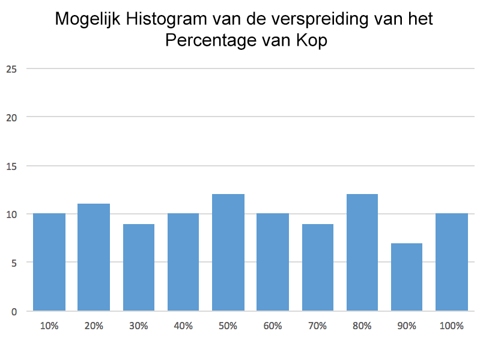
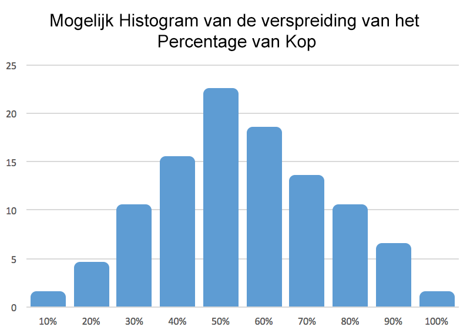

Muntworpproject
Op deze pagina, ga je leren hoe je een model moet maken van het opgooien van een munt.
Wanneer je een munt opgooit, merk je dat de kans op kop of munt hetzelfde is. Alleen zul je merken dat als je de munt 10 keer opgooit, je niet 5 keer munt en 5 keer kop krijgt. Wanneer gebeurt dat wel? Is het anders als je de munt 100 keer opgooit? of 1000 keer? Het is vermoeiend en inefficiënt om een munt 100 of 1000 keer op te gooien, maar is het mogelijk om deze vraag te beantwoorden met een simulatie. In dit project ga je een muntworp simuleren en je gaat je hypothese testen.
- Speel met het Snap!-bestand(Engels) dat hier staat
om een mogelijke implementatie van wat je probeert te maken
met je simulatie te zien. Plan voordat je begint met programmeren wat er moet gebeuren in je
simulatie:
- Wanneeer en hoe voert de gebruiker het gewenste aantal worpen in?
- Hoe simuleert het programma de worp wiskundig gezien?
- Hoe simuleert het programma de worp visueel gezien? Wat ziet de gebruiker?
- Wat zijn de variabelen die je moet maken zodat je de belangrijke parameters bijhoudt in de simulatie? Wanneer moeten deze aangemaakt worden? Wanneer moeten ze geüpdatet worden?

Gebruik deze link om het programma te maken voor de simulatie. Het bevat een sprite genaamd "Munt" met 2 uiterlijken (Kop en Munt) en een geluidsbestand ("Pop") om je op weg te helpen.- Als je een munt 10 keer gooit en deze 10-worpenproef vele keren herhaalt, hoe hoog denk je dat het
percentage van kop is over alle proeven? Hier zijn 2 voorbeelden van mogelijke verdelingen van
meerdere keren 10 keer een munt opgooien. Welk histogram verwacht jij in jouw simulatie?
 - Gebruik je programma om een munt 10 keer op te gooien en noteer het percentage kop dat je observeert. Combineer je resultaten met de rest van de klas om de verspreiding van dit percentage in een histogram te laten zien. Komen de resultaten overeen met wat je had verwacht?
- Als je het bovenstaande experiment zou herhalen, maar deze keer de munt 100 keer gooit (100-worpenproeven doet), hoe zou je dan verwachten dat je histogram met de percentages koppen zou veranderen? Test je verwachtingen met behulp van een simulatie en combineer de resultaten met de klas.
Doe dit zelfstandig maar als je vast komt te zitten ga dan naar deze pagina voor hints.
- Maak een kopie van je werk en schrijf code die een simulatie maakt van een oneerlijke munt. Als voorbeeld, In plaats van de kans op kop versus munt 50/50 is, zijn de verwachtingen 75/25 zijn. Je programma moet de gebruiker vragen om deze bias in te voeren.
- Bestudeer de wiskunde achter het meerdere keren werpen van een munt, op papier. Wat is bijvoorbeeld
de kans dat na 3 worpen de kans op:
Hint: je kan dit doen door alle mogelijke uitkomsten op te schrijven: KKK, KKM, etc.- precies 3 keer kop
- precies 2 keer kop
- precies 1 keer kop
- geen kop
- Maak een Snap!programma om het rollen van een dobbelsteen te simuleren. Breid dan je programma uit om het rollen van 2 dobbelstenen te simuleren. Maak een variabele om de som van de twee dobbelstenen te rapporteren. Voorspel welke som het vaakst voorkomt als je de dobbelsteen 1000 keer rolt. Gebruik je simulatie om je hypothese te testen.